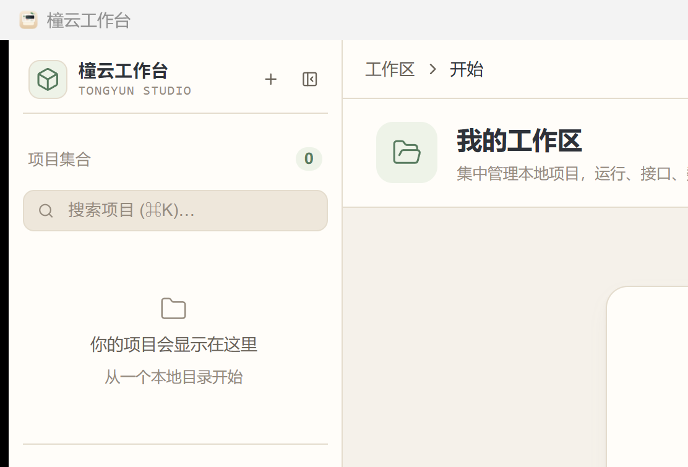

代表作
橦云手帐
Tongyun Planner

一本本地优先的桌面手帐，放得下四象限待办、翻页日记和番茄钟。需要跨设备时，可以自己启用 WebDAV 同步。
独立开发者
做可以一直用下去的
桌面工具。
我做手帐和开发工具，默认把数据留在自己的设备上。也在记录一个人怎样和 AI Agent 一起做软件。
看我做的作品代表作
Tongyun Planner
一本本地优先的桌面手帐，放得下四象限待办、翻页日记和番茄钟。需要跨设备时，可以自己启用 WebDAV 同步。
从本机运行、调接口到审代码，我把反复使用的工作流程做进桌面应用。

我负责定方向、写验收标准，也负责最后看一遍结果。重复的操作会慢慢沉淀进我自用的 TongSkills。
在分派前写下任务范围、目标仓库和验收条件。
让 Agent 分担实现、回归和文档，代码和验证结果一起交审。
检查差异、测试和实际界面，确认可以合并什么。